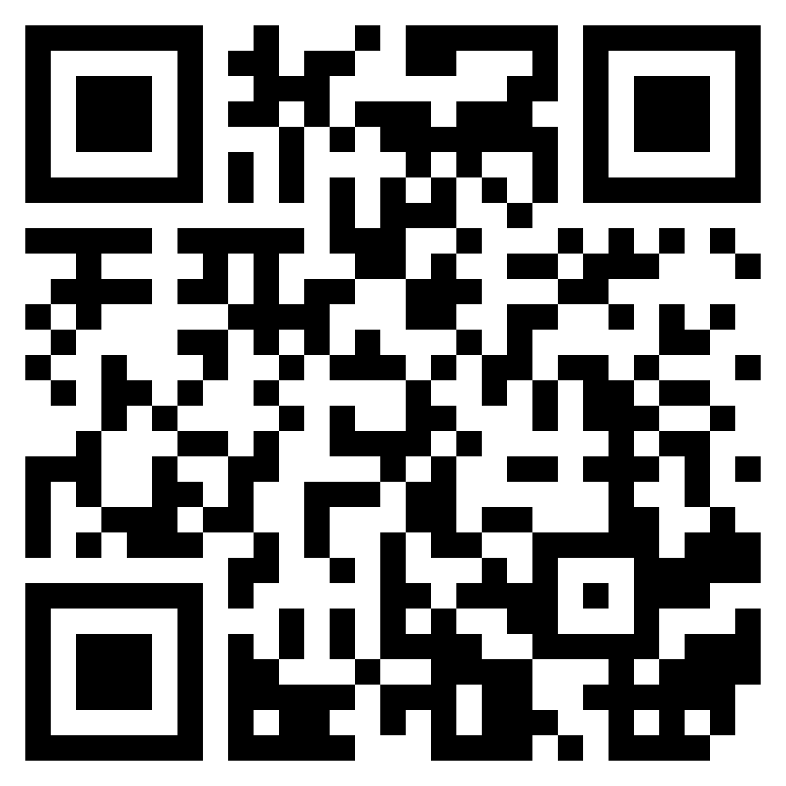

CSD Robocon NITK, is one of the foremost robotics clubs at NITK. Ever since 2018, we have been taking part in the ABU Robocon (Asia Pacific Broadcasting Union), which is touted as the ultimate Robotics Challenge for Undergraduates.
Last year we scored a perfect 100 on 100 for the first round which was the document submission. Sadly the pandemic disrupted the 2020 event for us, but we weren’t deterred by it. We strived to simulate the bots on ROS, thereby honing our skills for the next event.
This year, we wish to be back with a bang! 